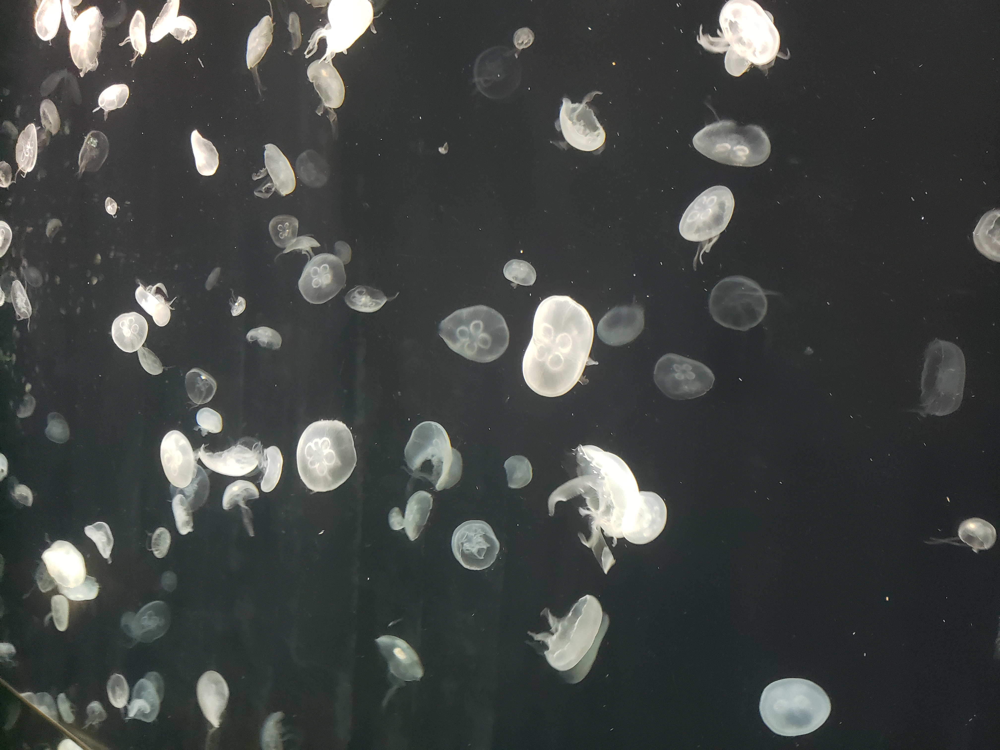
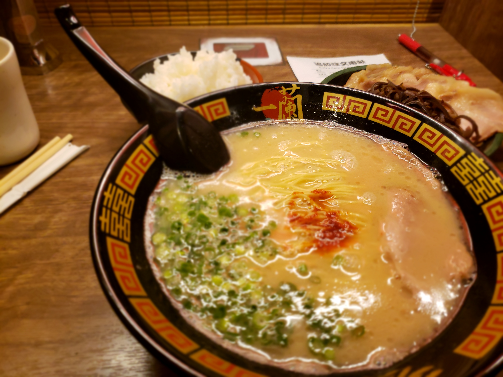
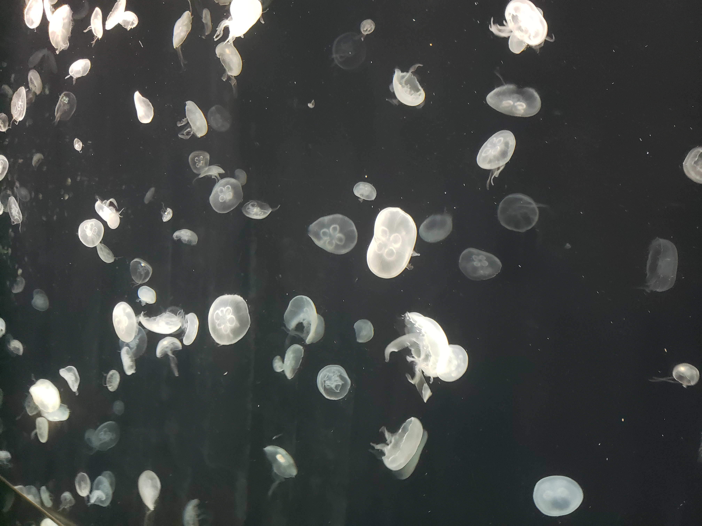
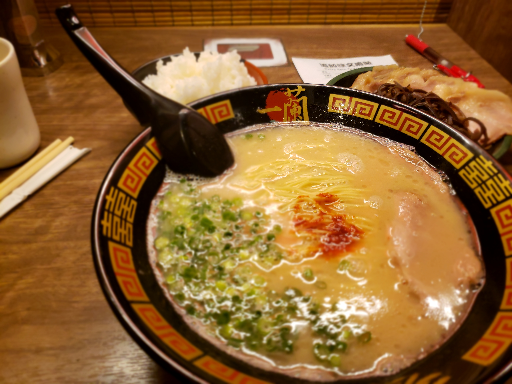

A little about me:
I am a civil engineer, English teacher and software engineer-to-be.
My Hogwarts house is Ravenclaw (I took the test twice, just to be sure).
I like playing table tennis, the taste of passionfruit icecream, my brother, learning languages, Fuufuu Ramen's Tonkotsu Ramen, Donkey Kong Country 2 for SNES, personal development, my three cats, the sound of heavy metal, my fiancée, Marketing and Entrepreneurship, hiking, L from Death Note, coding, souls- and rogue-like video-games and also no parallelism whatsoever. (/s)
I dislike spiders, mosquitoes and the sound of styrofoam.
I have lived and worked in Japan for 3 years, and it was THE experience of my life so far. While there, I met my fiancée, I ate takoyaki, I climbed Mt. Daimonji in Kyoto, I ate the best ramen in the world (according to Forbes), I went for a pub-crawl in Osaka for the New Year's Eve of 2018, I ate okonomiyaki, I learnt a ton of Marketing and Entrepreneurship stuff from podcasts, I ate katsudon, I saw the whale-shark in Osaka Aquarium, which since then has become my favorite animal, and a lot, lot more!
Here are some of my favorite pictures!


 


